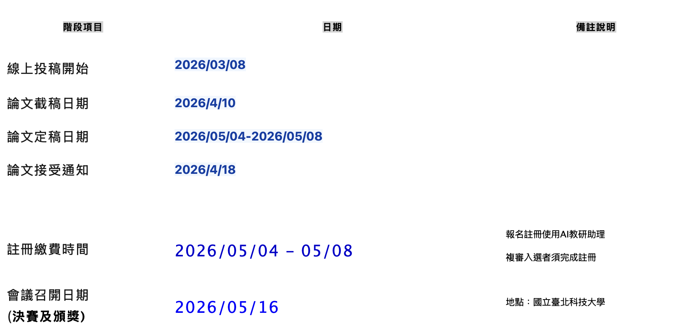
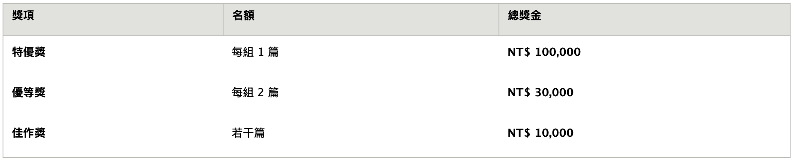

[最後延長徵稿]ICIM 2026暨 育秀AI數位科技論文獎徵選辦法
資訊管理學會壹、活動宗旨
隨著人工智慧（AI）等新興數位科技快速演進，AI 已成為驅動產業升級與社會創新的核心引擎。為回應智慧化時代對前瞻研究與創新應用的需求，財團法人育秀教育基金會特設立「育秀 AI 數位科技論文獎」。本獎項旨在鼓勵 AI 領域之卓越研究成果，強化理論與實務之連結， 培育具備科技素養與創新思維的頂尖 AI 人才，並推動 AI 技術於產業、教育及公共領域之深度應用。 ICIM2026 官方網站網址: https://icim2026.com
貳、重要時程表

參、獎項組別與內容
本獎項分為「研究創新」與「應用創新」兩大組別，參賽者可依研究屬性參加(可複選)：
一、 研究創新論文獎
- 甄選主題： 表彰於AI、區塊鏈、雲服務等數位科技領域具高度原創性之研究。除傳統 AI 理論、演算法與模型以及關於生成式AI理論框架、可解釋性AI、聯邦學習、 隱私機制等；亦特別歡迎AI驅動之商業模式與策略創新、智慧化行為與人機協作、數據治理、倫理與社會責任，以及智慧製造、精準零售、金融科技、數位醫療、ESG永續管理、 供應鏈與物流等領域之研究論文投稿。
- 評審標準：研究創新性與前瞻性(35%)，研究方法與理論嚴謹性(30%)，學術貢獻與研究價值(25%)， 論文結構與學術表達(10%)；評審將著重於能深化學術理解並推進 資管相關領域發展之前瞻議題之論文。
二、 應用創新論文獎
- 甄選主題： 表彰 AI、區塊鏈、雲服務於實務場域之創新應用，提出具備技術整合能力與實際解決方案 之論文。本獎項鼓勵參賽者針對智慧製造、精準零售、金融科技、數位醫療、ESG永續管理等實務場域， 著重於技術整合、系統設計及實際成效，能具體解決產業痛點或社會問題，展現高度應用價值者。
- 評審標準：應用創新性與問題適切性(30%)，技術架構與系統整合 (25%)，實際成效與應用價值(30%)， 論文結構與說明清晰度 (15%)；評審將著重於技術如何轉化為可量化之績效（如效率提升、成本降低或使用者滿意度）。
三、 獎勵辦法
各組獎勵名額與金額如下（主辦單位得視參賽作品水準酌予調整名額或從缺）：

- 若報名時共同作者有列明指導教授者，獎金分配20%予指導教授為原則
- 使用AI教研助理：參賽者得註冊使用擴增生成式AI教研助理。
- 參賽證明： 所有完成並繳交之論文，皆可獲得區塊鏈存證之電子證書，證明其參與本競賽。
肆、評審與格式規範
一、 評審作業
1. 委員會組成： 敦聘相關領域之權威專家、學者組成評審委員會。
2. 評審程序： 分為初審、複審及決審三階段。
- 初審及複審： 採書面審查，重點評估論文品質與學術價值。
- 決審： 採現場簡報（Oral Presentation），考量表達能力與應答表現。
3. 匿名原則： 審查過程採匿名方式進行，以確保評選之公正性。
二、 論文格式
1. 規範基準： 論文格式及字數規範原則上依據 ICIM 2026 研討會之要求。
2. 檔案格式： A4 尺寸，請提供 Word 或 PDF 電子檔。
伍、權利與義務
1. 智慧財產權： 參賽者保有論文之智慧財產權。參賽即視為同意主辦單位將論文成果用於競賽宣傳、成果展示、AI 主題檢索及非營利之學術交流用途。
2. 未盡事宜： 主辦單位保留修改競賽規章、時程及獎項之最終解釋權。如有任何變更，將以競賽官網最新公告為準。 陸、辦理單位與聯絡方式
- 主辦單位： 中華民國資訊管理學會、國立臺北科技大學資訊與財金管理系
- 贊助單位： 財團法人育秀教育基金會
- 支持單位： 台智雲 (TWS)、政大產學研創中心天宿智能科技 (SkyChain)
- 聯絡窗口： AI數位科技論文獎辦公室（政大研創中心350416 室）王先生 Email： service@skychainnet.com